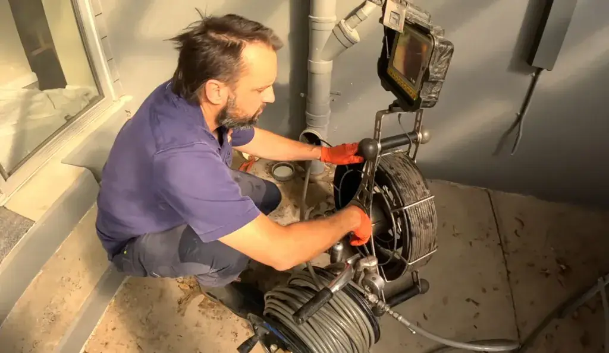

Looks Like This Line is Cleared Away
The URL or page you requested could not be located. It may have moved or been updated. Let us help you find the drain cleaning service or location you need.

Drain Cleaning Guide & Homeowner Diagnostic Assistance
While the specific page you clicked may have moved or changed addresses, Drain Cleaning Advisor provides complete, authoritative drain cleaning solutions across all of Naples, Florida. If you are experiencing a slow drain, foul sewer odors, or an active wastewater backup, use this comprehensive diagnostic guide to understand the exact issue affecting your home.
1. Understanding Main Sewer Line vs. Single Fixture Clogs
The first step in resolving any drainage failure is determining whether the problem is isolated to an individual fixture branch or situated in your home's central sewer lateral:
- Single Fixture Obstruction: If water drains slowly only in your master bathroom shower or kitchen sink, but toilets flush normally and other fixtures drain freely, the clog is located in that fixture's individual P-trap or 1.5-inch branch arm. This is typically caused by accumulated hair, soap curd, or kitchen culinary fats. Motorized mechanical cabling is the recommended, non-invasive solution.
- Mainline Sewer Stoppage: If flushing a toilet causes wastewater to surge into your lowest shower or bathtub, or if multiple fixtures gurgle simultaneously, the obstruction is located downstream in your 4-inch main sewer lateral. All water use must cease immediately to prevent interior flooding, and professional video camera diagnostics and high-torque cabling are required.
2. Southwest Florida Coastal Plumbing Challenges
Plumbing systems in Collier County face environmental conditions rarely encountered in other regions of the United States:
- Subtropical Root Intrusion: Mature landscaping featuring weeping ficus hedges, royal palms, and sea grapes seek water vapor escaping from microscopic pipe seams during dry winter months. Thirsty roots infiltrate joints, creating dense root balls that trap solid waste.
- Coastal Sand Silting: Fine carbonate shell sand frequently blows into exterior pool lanai deck drains, patio catch basins, and unsealed ground cleanouts. Mechanical snakes only stir heavy sand; high-pressure hydro jetting is required to liquefy and wash the silt out.
- Vintage Cast-Iron Tuberculation: Mid-century residences throughout Old Naples and surrounding coastal neighborhoods feature original cast-iron waste stacks. Decades of exposure to acidic sewer gases produce internal rust nodules that catch paper and require mechanical descaling.
- Seasonal Snowbird Dormancy: Properties left unoccupied for 3 to 6 months suffer from evaporated P-trap water seals. Dry traps allow harmful sewer methane gas and pests to enter living areas. Re-priming traps and flushing lines restores healthy drainage.
3. Why Chemical Cleaners Cause Severe Pipe Damage
We strongly advise Naples homeowners against pouring store-bought liquid drain chemicals (such as Drano or Liquid-Plumr) down their drains. Most chemical openers contain caustic lye (sodium hydroxide) or concentrated sulfuric acid. These products generate intense heat reactions that soften PVC glue joints, crack ceramic toilet bowls, and eat directly through the bottom of aged cast-iron pipes. Furthermore, when chemicals fail to clear a stubborn clog, the corrosive fluid remains standing in your fixture, posing severe burn risks to our technicians. Mechanical cabling and hydro jetting are 100% safe, chemical-free, and effective.
4. Primary Drain Cleaning Services Directory
Explore our complete range of certified drain clearing and diagnostic services:
- Main Sewer Line Cleaning: Comprehensive root cutting and heavy stoppage removal for residential laterals.
- Drain Snaking & Cabling: High-torque motorized cabling for sinks, showers, tubs, and toilet augering.
- Hydro Jetting Service: 4,000 PSI high-velocity water scouring for restaurant grease lines and heavy sand.
- Service Areas in Naples: Rapid dispatch across Old Naples, Port Royal, Pelican Bay, and North Naples.
5. Emergency Drainage Troubleshooting Checklist for Homeowners
If you are navigating our site while dealing with an active drain emergency, follow this emergency troubleshooting checklist:
- Step 1: Check All Fixtures: Test water flow in other bathrooms. If only one sink is backed up, you have an isolated branch blockage that can wait for normal business hours. If multiple fixtures gurgle or back up, your main sewer lateral is blocked.
- Step 2: Shut Down Water Appliances: Turn off dishwashers and washing machines mid-cycle. Do not run garbage disposals. Water discharged from upper-floor appliances will flood ground-floor bathroom fixtures.
- Step 3: Check Your Yard Cleanout: Walk outside and inspect your front lawn or flowerbeds for a white or black 4-inch PVC pipe cap. If the cap is loose or water is leaking around it, your lateral is completely blocked downstream toward the street.
- Step 4: Do Not Use Drain Acids: Caustic chemicals generate high heat that weakens PVC glue joints and damages porcelain. Never pour chemicals into standing water.
- Step 5: Call Naples Dispatch: Contact our central dispatch desk at +1 (239) 688-0557 for immediate priority dispatch across Collier County.
6. Seasonal Maintenance Guidelines for Naples Snowbird Properties
Seasonal residents in Naples face unique plumbing challenges when returning in the fall or departing in the spring. During hot summer months, unoccupied homes experience dry P-traps as standing water evaporates. This breaks the liquid seal that blocks sewer gases, allowing toxic methane and hydrogen sulfide to infiltrate living areas. To protect your home:
- Before departing in spring, pour non-toxic food-grade mineral oil into toilet bowls and floor drains to create a floating evaporation barrier.
- Upon returning in autumn, run cold water through all fixture taps for three full minutes to flush stale sediment and re-prime all plumbing traps.
- Schedule an annual preventative video camera pipe inspection every 18 to 24 months to catch aggressive ficus and palm root intrusion before it causes a sudden sewer backup.
Need Immediate Assistance in Naples, FL?
Our dispatch coordinators are available 7 days a week to answer questions and schedule fast technician arrival.
Call Dispatch: +1 (239) 688-0557